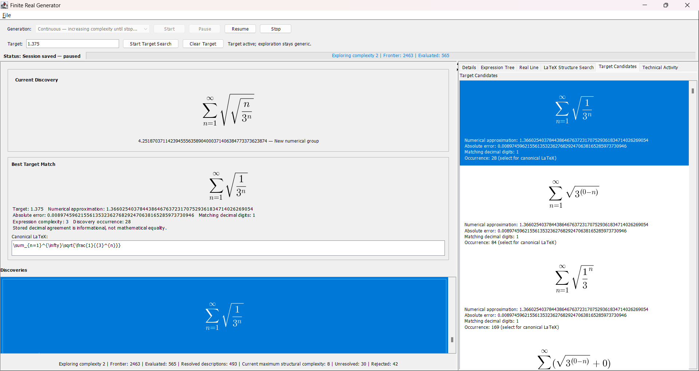
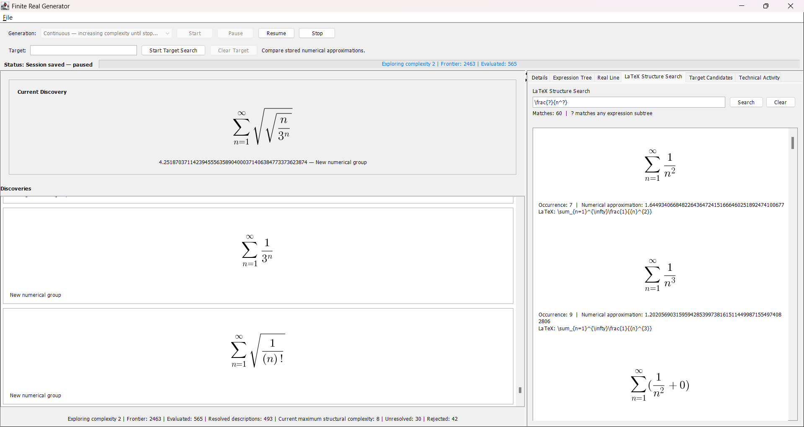

Generate
Build expression trees using a generic grammar and bind open terms into infinite sums. Local expansion introduces deeper structures without exhaustively generating the next depth.
04 / SOFTWARE
A continuous mathematical exploration engine for discovering finite descriptions of real numbers.
Finite Real Generator is a Java desktop application that generates finite symbolic descriptions of infinite mathematical constructions and numerically investigates the real values they appear to specify. It records successful numerical discoveries and provides tools for inspecting, searching, and resuming the exploration.

CONTINUOUS EXPLORATION
Build expression trees using a generic grammar and bind open terms into infinite sums. Local expansion introduces deeper structures without exhaustively generating the next depth.
Check admissibility and gather convergence-likelihood evidence before numerical selection. This screening and ranking is heuristic, not a proof of convergence.
Use one numerical worker to investigate selected sums and record successful descriptions, approximations, and provenance for inspection.
Dovetail deterministically across structural complexities using bounded frontiers and backpressure. Completed discovery history can grow as exploration continues.
INSPECTING DISCOVERIES
Current Discovery and the newest-first Discovery Gallery render the generated descriptions in mathematical notation. Selecting a discovery synchronizes Details, the Expression Tree, and an interactive Real Line with zoom, pan, and reset.
Canonical LaTeX, numerical approximations, and provenance remain available for closer inspection; Technical Activity records the progress of the search. Continuous is the default mode and runs until paused or stopped. Quick offers a bounded ranked depth-2 diagnostic or demonstration run.
NUMERICAL TARGET SEARCH
Enter a decimal or scientific-notation target to compare successful stored discoveries by absolute error. Best Target Match remains the global closest discovery; Target Candidates lists all compared discoveries in error order, with numerical approximations and matching decimal digits.
Generation and scheduling remain target-blind. Changing the target rescans stored approximations without reevaluating the sums or restarting exploration. The expressions shown were generated generically, not in response to the target.

LATEX STRUCTURAL SEARCH
The sole wildcard, ?, means any expression subtree. A pattern such as \frac{?}{n^?} finds fractions with a power of n in the denominator, wherever that structure occurs within a discovery.
Matching uses expression trees, not raw LaTeX substring search. It preserves operand order, performs no algebraic simplification, and returns one result per discovery. There are no named wildcards or regex features. Structural search observes history and new discoveries independently of Target Search, and never directs generation.

? matches a single expression subtree, including a leaf or a compound expression.PERSISTENT SESSIONS
Saving a running exploration pauses at a safe candidate boundary before opening the file chooser. A coherent paused checkpoint is written to a .frcontinuous session, then the same exploration automatically resumes after a successful save.
Saving an already paused session leaves it paused, as does a failed write. Loaded sessions begin paused; Resume restores the saved frontier, deterministic sequence, discoveries, and search objectives instead of regenerating the initial seed. Closing the application does not automatically save.
TECHNICAL HIGHLIGHTS
Expression trees remain the mathematical authority throughout generation, structural matching, and persistence. Swing presents the discoveries while asynchronous JLaTeXMath rendering fits oversized formulas to the available space using bounded rendering queues.
Deterministic and GUI verification cover scheduling, save/resume continuity, target-blind exploration, structural matching, rendering, and lifecycle behavior. The desktop application requires JDK 21+; JLaTeXMath 1.0.7 is bundled with the repository.
MATHEMATICAL SCOPE
The symbolic expressions are exact finite descriptions. Values reported for generated infinite sums are numerical approximations. Screening, ranking, stabilization, and approximate agreement do not prove convergence or exact equality.
The software makes no claim that every real has a finite description, that the reals are countable, or that the Continuum Hypothesis is resolved. The source, release, and README document the implementation and its limitations.
NEXT